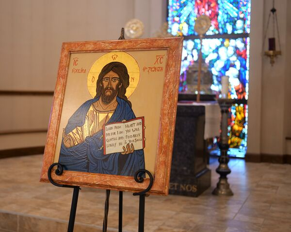
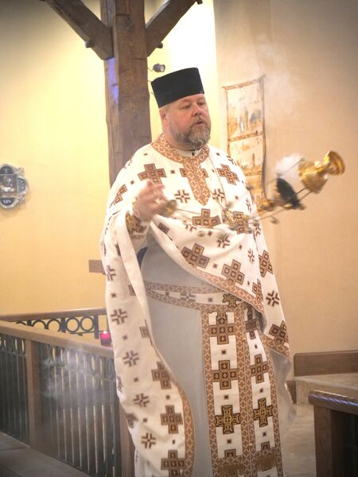
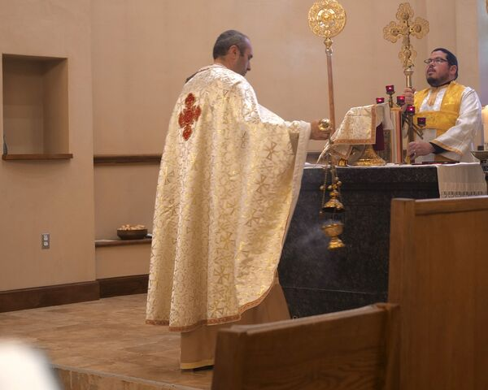
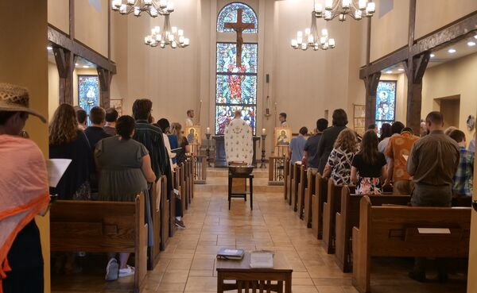

Divine Liturgy
Fr. Elias travels up from Dallas as he is able, so we have no fixed weekly schedule. Upcoming Divine Liturgies and events are listed in the calendar below.
See the calendar below for the current schedule of services.
Location
Catholic Charities of Eastern Oklahoma2450 N Harvard Ave
Tulsa, OK 74115
Please enter through the main door facing Harvard Avenue.
Clergy
Under the care of the Very Rev. Fr. Elias Rafaj, as an outreach of Saint Basil the Great Byzantine Catholic Church in Irving, Texas, and the Byzantine Catholic Archeparchy of Pittsburgh.
Calendar
New here?
Welcome! We are always glad to have visitors. The Byzantine Catholic Church is one of the 24 Churches that make up the Universal Catholic Church: we are Catholics in communion with the Pope of Rome, faithful to our Eastern Christian theology and heritage.
- The Divine Liturgy lasts at least an hour and a half. Watch and follow along; don’t worry about doing something wrong.
- Almost everything is chanted, and we use a lot of incense.
- We cross ourselves often, from right to left.
- Standing is the normal posture, but please sit whenever you need to. In place of kneeling we make a profound bow at the Words of Institution and the Epiclesis.
- Any properly disposed Catholic may receive Holy Communion. It is given by spoon: open your mouth wide, tongue back, and say nothing; the priest speaks for you.
Please bring a light refreshment to share after the Liturgy and stay for social time.
Learn more: God With Us Online · Becoming Byzantine · Metropolitan Cantor Institute
Photos




Stay Connected
Get parish news and announcements by email or text through Flocknote.